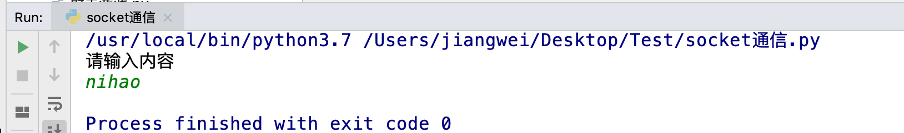

udp网络程序-发送数据
创建一个基于udp的网络程序流程很简单，具体步骤如下：
- 创建客户端套接字
- 发送/接收数据
- 关闭套接字
import socket
# 1. 创建一个UDP的socket连接
udp_socket = socket.socket(socket.AF_INET, socket.SOCK_DGRAM)
# 2. 获取用户输入的内容
data = input('请输入内容')
# 3. 准备接收方的地址和端口号
addr = ('127.0.0.1', 8080)
# 4. 将用户的输入内容进行编码，并发送到指定地址和端口
udp_socket.sendto(data.encode('gbk'), addr)
# 5. 接收传递过来的消息，并指定接受的字节大小
recv_data = udp_socket.recvfrom(1024)
# 6. 接收到的对象是一个元组，元组里有两个元素
print(recv_data)
# 6.1 元组里的第一个数据显示接收到内容
print(recv_data[0].decode('gbk'))
# 6.2 元组里的第二个数据显示发送方的地址和端口号
print(recv_data[1])
# 7. 关闭socket连接
udp_socket.close()

运行网络调试助手，查看运行效果：

udp网络程序-端口问题
- 会变的端口号
重新运行多次脚本，然后在“网络调试助手”中，看到的现象如下：

- 每重新运行一次网络程序，上图中红圈中的数字，不一样的原因在于，这个数字标识这个网络程序，当重新运行时，如果没有确定到底用哪个，系统默认会随机分配
- 记住一点：这个网络程序在运行的过程中，这个就唯一标识这个程序，所以如果其他电脑上的网络程序如果想要向此程序发送数据，那么就需要向这个数字（即端口）标识的程序发送即可
2. UDP绑定信息
<1>. 绑定信息
一般情况下，在一台电脑上运行的网络程序有很多，为了不与其他的网络程序占用同一个端口号，往往在编程中，udp的端口号一般不绑定 但是如果需要做成一个服务器端的程序的话，是需要绑定的，想想看这又是为什么呢？ 如果报警电话每天都在变，想必世界就会乱了，所以一般服务性的程序，往往需要一个固定的端口号，这就是所谓的端口绑定。
<2>. 绑定示例
from socket import *
# 1. 创建套接字
udp_socket = socket(AF_INET, SOCK_DGRAM)
# 2. 绑定本地的相关信息，如果一个网络程序不绑定，则系统会随机分配
local_addr = ('', 7788) # ip地址和端口号，ip一般不用写，表示本机的任何一个ip
udp_socket.bind(local_addr)
# 3. 等待接收对方发送的数据
recv_data = udp_socket.recvfrom(1024) # 1024表示本次接收的最大字节数
# 4. 显示接收到的数据
print(recv_data[0].decode('gbk'))
# 5. 关闭套接字
udp_socket.close()
运行结果：

总结
- 一个udp网络程序，可以不绑定，此时操作系统会随机进行分配一个端口，如果重新运行此程序端口可能会发生变化
- 一个udp网络程序，也可以绑定信息（ip地址，端口号），如果绑定成功，那么操作系统用这个端口号来进行区别收到的网络数据是否是此进程的